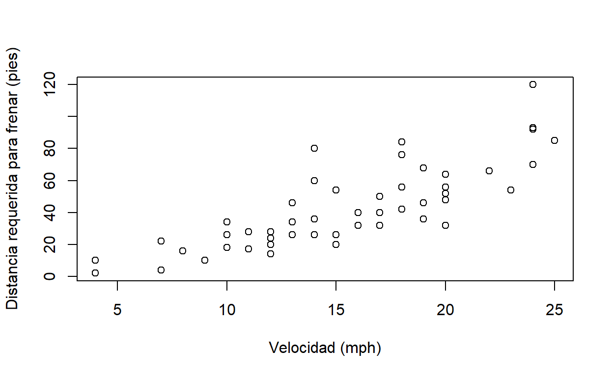

Sitio oficial de R: The R Project for Statistical Computing.
Sitio oficial de RStudio: RStudio - Open source & professional software for data science teams.
Documentación y manuales de R: R Documentation and manuals - R Documentation.
Documentación de paquetes y funciones de R: R Package Documentation.
Guía de instalación de paquetes de R: R Packages: A Beginners Guide.
Video sobre instalación de paquetes en R: How to install packages in R and RStudio?.
Datos utilizados durante el curso: Procesamiento de datos con R - datos.
R es un lenguaje de programación enfocado en análisis estadístico. Es ampliamente utilizado en diversas áreas de investigación, entre las que pueden mencionarse aprendizaje automático (machine learning), ciencia de datos (data science) y big data, con aplicaciones en campos como biomedicina, bioinformática y finanzas, entre muchos otros. Fue creado por Ross Ihaka y Robert Gentleman en la Universidad de Auckland, Nueva Zelanda, en 1993.
Algunas de las principales características de este lenguaje son:
R es un proyecto de software libre que se comparte mediante una licencia GNU General Public Licence (GNU GPL). Esta característica permite que la funcionalidad original de R pueda ser ampliada mediante bibliotecas o paquetes desarrollados por la comunidad de programadores.
Para programar en R, puede utilizarse una interfaz de línea de comandos y también ambientes de desarrollo integrados (IDE, integrated development environment) como Jupyter o RStudio.
RStudio es el IDE más popular para el lenguaje R. Está disponible en una versión de escritorio (RStudio Desktop) y en una versión para servidor (RStudio Server). Esta última permite la conexión de varios usuarios a través de un navegador web. RStudio se ofrece también como un servicio en la nube, a través de RStudio Cloud.
Además de edición de código fuente en R (y otros lenguajes), RStudio contiene capacidades para depurar código y visualizar datos en formatos tabulares, gráficos y de mapas.
En esta sección, se explican algunos de los aspectos principales de la definición del lenguaje R. Específicamente, el concepto de función y los tipos de datos que maneja R.
R, al igual que otros lenguajes de programación, estructura su funcionalidad en unidades de código fuente llamadas funciones. Cada función realiza una tarea específica como, por ejemplo, un cálculo matemático y, por lo general, retorna un valor como salida. Todas las funciones tienen un nombre y un conjunto de argumentos que especifican los datos de entrada que procesa la función. Los argumentos se escriben entre paréntesis redondos (()) y estos siempre deben incluirse, aún en el caso de que la función no tenga ningún argumento. Si la función tiene varios argumentos, deben separarse mediante comas (,).
La función print() recibe como argumento un valor (ej. un texto o un número) para imprimirlo en la pantalla. En el siguiente fragmento de código en R, se utiliza print() para imprimir la hilera Hola mundo. Nótese el uso del símbolo # para comentarios (i.e.texto que no es código ejecutable).
# Impresión de una hilera de carácteres
print("Hola mundo")
[1] "Hola mundo"En otro ejemplo, la función mean() retorna la media aritmética del argumento de entrada. En el siguiente ejemplo, se calcula la media de los números de un vector creado a su vez con la función c().
La función getwd() (get working directory) retorna la ruta del directorio de trabajo de la sesión actual de R. Este es el directorio en el cual R espera encontrar, por ejemplo, archivos de datos.
# Impresión del directorio de trabajo
getwd()
[1] "C:/Users/mfvargas/curso-r-simocute/curso-r-simocute.github.io"La función setwd() (set working directory) establece la ruta del directorio de trabajo de la sesión actual de R. Como argumento, recibe una hilera de texto con la ruta.
Note las barras utilizadas para separar los subdirectorios: / (no \)
Ejercicio 01:
a. Obtenga la ruta de su directorio de trabajo con la función getwd().
b. Si lo desea, cambie la ruta de su directorio de trabajo con la función setwd(). Verifique el cambio con getwd().
Los argumentos de las funciones tienen nombres que pueden especificarse, en caso de ser necesario. En el siguiente ejemplo, se utilizan los nombres de los argumentos x, xlab y ylab de la función plot() para especificar la fuente de datos y las etiquetas de los ejes x e y de un gráfico.
# Gráfico con etiquetas en los ejes x e y del conjunto de datos "cars"
plot(
x=cars,
xlab="Velocidad (mph)",
ylab="Distancia requerida para frenar (pies)"
)

Ejercicio 02: estudie la documentación de la función plot() y agregue al gráfico anterior:
a. Un título.
b. Un subtítulo.
Para obtener ayuda de una función desde la línea de comandos de R, puede utilizarse un signo de pregunta (?) seguido del nombre de la función o bien la función help(). Por ejemplo:
# Ayuda de la función setwd()
?setwd
help(setwd)
Adicionalmente, puede utilizarse la función apropos() para buscar funciones por palabras clave.
# Búsqueda, por palabras clave, de funciones relacionadas con "mean" (media aritmética). Note las comillas ("").
apropos("mean")
[1] ".colMeans" ".rowMeans" "colMeans" "kmeans"
[5] "mean" "mean.Date" "mean.default" "mean.difftime"
[9] "mean.POSIXct" "mean.POSIXlt" "rowMeans" "weighted.mean"La función example() presenta ejemplos sobre el uso de una función.
# Ejemplos de uso de la función mean()
example("mean")
mean> x <- c(0:10, 50)
mean> xm <- mean(x)
mean> c(xm, mean(x, trim = 0.10))
[1] 8.75 5.50Por otra parte, los sitios R Documentation and manuals - R Documentation y All R Documentation reúnen documentación de las funciones de R. También puede obtenerse ayuda sobre una función en los buscadores de Internet (ej. Google), además de ejemplos, tutoriales y otros materiales de apoyo.
Las funciones de R se agrupan en conjuntos llamados bibliotecas, las cuales se distribuyen en paquetes. Para utilizar un paquete, primero debe cargarse (en la memoria del computador) con la función library().
# Carga del paquete stats
library(stats)
Algunos paquetes están contenidos en la distribución base de R y otros deben instalarse de manera separada con la función install.packages().
# Instalación del paquete dplyr (note las comillas)
install.packages("dplyr")
R puede trabajar con varios tipos de datos básicos, entre los que están números, carácteres (i.e.textos) y lógicos. También puede trabajar con tipos compuestos, como factores y data frames.
R proporciona acceso a los datos a través de objetos. Un objeto es una entidad que tiene asociadas propiedades (i.e.datos) y métodos (i.e.funciones) para manipular esas propiedades. Un objeto puede ser, por ejemplo, un número, una hilera de texto, un vector o una matriz.
Hay muchas formas de crear objetos en R. Una de las más sencillas es con los operadores de asignación. Estos son = y <- (o ->). Por ejemplo, las siguientes sentencias crean un número, un texto y un vector.
# Número
x <- 10
x
[1] 10
# Otro número
20 -> y
y
[1] 20
# Hilera de carácteres
nombre <- 'Manuel'
nombre
[1] "Manuel"
# Vector de hileras de carácteres
dias <- c('Domingo', 'Lunes', 'Martes', 'Miércoles', 'Jueves', 'Viernes', 'Sábado')
dias
[1] "Domingo" "Lunes" "Martes" "Miércoles" "Jueves"
[6] "Viernes" "Sábado" Tanto x, como nombre como dias son variables. Una variable es una etiqueta que se le asigna a un valor (o a un objeto). Una variable tiene un nombre que debe comenzar con una letra.
El tipo de una variable (u objeto) puede consultarse con la función typeof(). Por ejemplo:
typeof(x)
[1] "double"typeof(y)
[1] "double"typeof(nombre)
[1] "character"typeof(dias)
[1] "character"A continuación, se describen con más detalle algunos de los tipos de datos utilizados en el lenguaje R.
R define seis tipos de datos básicos. En esta sección, se describen los más utilizados durante este curso.
Pueden ser enteros (integer) o decimales (double). Se utilizan en diversos tipos de operaciones, incluyendo las aritméticas (ej. suma, resta, multiplicación, división).
# Declaración de variables numéricas
x <- 5
y <- 0.5
# Suma
x + y
[1] 5.5
# Tipos de datos numéricos
typeof(x)
[1] "double"typeof(y)
[1] "double"typeof(x + y)
[1] "double"Para declarar números enteros puede usarse el sufijo L o la función as.integer().
# Números enteros
x <- 10L
y <- as.integer(15)
# Multiplicación
x * y
[1] 150
# Tipos de datos enteros
typeof(x)
[1] "integer"typeof(y)
[1] "integer"typeof(x * y)
[1] "integer"Nótese que al declararse una variable numérica, ya sea que tenga o no punto decimal, R la considera por defecto de tipo double. Para que se considere de tipo integer, debe utilizarse el sufijo L o la función as.integer().
Se utilizan para representar textos. Deben estar encerrados entre comillas simples ('') o dobles ("").
# Hileras de carácteres
nombre <- "María"
apellido <- "Pérez"
# Concatenación mediante la función paste()
paste(nombre, apellido)
[1] "María Pérez"Los objetos lógicos (también llamados booleanos) tienen dos posibles valores: verdadero (TRUE) o falso (FALSE).
# Variable lógica
a <- 1 < 2
a
[1] TRUE
# Variable lógica
b <- 1 > 2
b
[1] FALSELas expresiones lógicas pueden combinarse con operadores como:
& (Y, en inglés AND)| (O, en inglés OR)! (NO, en inglés NOT)# Operador lógico AND
(1 < 2) & (3 < 4)
[1] TRUE
# Operador lógico OR
(2 + 2 == 5) | (20 <= 10)
[1] FALSE
# Operador lógico NOT
!(2 + 2 == 5)
[1] TRUEUn vector es una estructura unidimensional que combina objetos del mismo tipo.
Los vectores pueden definirse de varias formas como, por ejemplo, con la función c() (del inglés combine):
# Definición de un vector de números
vector_numeros <- c(1, 7, 32, 45, 57)
vector_numeros
[1] 1 7 32 45 57
# Definición de un vector de hileras de carácteres
vector_nombres <- c("lvaro", "Ana", "Berta", "Bernardo")
vector_nombres
[1] "lvaro" "Ana" "Berta" "Bernardo"Los vectores también pueden crearse con el operador :, el cual especifica una secuencia:
# Definición de un vector de números con la secuencia de 1 a 10
vector_secuencia <- 1:10
vector_secuencia
[1] 1 2 3 4 5 6 7 8 9 10
# Definición de un vector de números con la secuencia de -5 a 5
vector_secuencia <- -5:5
vector_secuencia
[1] -5 -4 -3 -2 -1 0 1 2 3 4 5
# Definición de un vector de números con la secuencia de -0.5 a 3.7
vector_secuencia <- -0.5:3.7
vector_secuencia
[1] -0.5 0.5 1.5 2.5 3.5La función seq() también crea un vector con base en una secuencia y permite especificar argumentos como un valor de incremento y la longitud de la secuencia.
# Definición de un vector de números con la secuencia de 1 a 10
vector_secuencia <- seq(1, 10)
vector_secuencia
[1] 1 2 3 4 5 6 7 8 9 10
# Definición de un vector de números con la secuencia de 0.5 a 15.3, con incremento de 2
vector_secuencia <- seq(from=0.5, to=15.3, by=2)
vector_secuencia
[1] 0.5 2.5 4.5 6.5 8.5 10.5 12.5 14.5
# Definición de un vector de números con la secuencia de 1.5 a 9.4, con longitud de 4
vector_secuencia <- seq(from=1.5, to=9.4, length.out=4)
vector_secuencia
[1] 1.500000 4.133333 6.766667 9.400000Los elementos de un vector se acceden a través de sus índices (i.e.posiciones). La primera posición corresponde al índice 1, la segunda al índice 2 y así sucesivamente. Los índices se especifican entre paréntesis cuadrados ([]), ya sea para una posición específica o para un rango de posiciones. También es posible especificar los índices que se desea excluir.
# Vector de nombres de países
paises <- c("Argentina", "Francia", "China", "Australia", "México")
paises
[1] "Argentina" "Francia" "China" "Australia" "México"
# Elemento en el índice 3
paises[3]
[1] "China"El operador : puede utilizarse para especificar un rango de índices:
# Elementos entre los índices 2 y 4 (2, 3 y 4)
paises[2:4]
[1] "Francia" "China" "Australia"Con la función c(), es posible especificar un conjunto de índices específicos:
# Elementos entre los índices 1, 4 y 5
paises[c(1, 4, 5)]
[1] "Argentina" "Australia" "México" Los números negativos pueden usarse para excluir índices:
# Exclusión de los índices 3 y 4
paises[c(-3, -4)]
[1] "Argentina" "Francia" "México" Los valores lógicos TRUE y FALSE también pueden usarse para incluir y excluir índices de un vector:
# Se incluyen los índices 1, 2 y 4; y se excluyen los índices 3 y 5
paises[c(TRUE, TRUE, FALSE, TRUE, FALSE)]
[1] "Argentina" "Francia" "Australia"En los vectores pueden aplicarse operaciones aritméticas:
[1] 3 7 11 15
# Multiplicación de vectores
a * b
[1] 2 12 30 56Y también pueden realizarse operaciones relacionales:
# Comparación con el operador <
a < b
[1] TRUE TRUE TRUE TRUEUna matriz es una estructura bidimensional de filas y columnas.
Las matrices se definen mediante la función matrix().
# Definición de una matriz de 3 x 3 con elementos de la secuencia 1:9 distribuidos en las columnas
m <- matrix(1:9, nrow=3, ncol=3)
m
[,1] [,2] [,3]
[1,] 1 4 7
[2,] 2 5 8
[3,] 3 6 9
# Definición de una matriz de 3 x 3 con elementos de la secuencia 1:9 distribuidos en las filas
m <- matrix(1:9, nrow=3, ncol=3, byrow=TRUE)
m
[,1] [,2] [,3]
[1,] 1 2 3
[2,] 4 5 6
[3,] 7 8 9
# Definición de una matriz de 3 x 2 con nombres para las filas y las columnas
datos <- c(18, 500, 25, 1000, 30, 2000)
filas <- c("Ana", "Mario", "Laura")
columnas <- c("Edad", "Salario")
m <- matrix(datos, nrow=3, ncol=2, byrow=TRUE, dimnames=list(filas, columnas))
m
Edad Salario
Ana 18 500
Mario 25 1000
Laura 30 2000La función list() se utiliza, en este caso, para combinar vectores. En general, se usa para combinar datos de cualquier tipo.
La indexación de matrices es similar a la de vectores, pero deben especificarse índices tanto para filas como para columnas.
# Elemento en la posición [2,2] (segunda fila, segunda columna)
m[2, 2]
[1] 1000
# Elementos de la primera fila
m[1,]
Edad Salario
18 500
# Elementos de la segunda columna
m[, 2]
Ana Mario Laura
500 1000 2000
# Elementos de las filas 1 y 2
m[1:2, ]
Edad Salario
Ana 18 500
Mario 25 1000
# Elementos de la fila "Mario"
m["Mario", ]
Edad Salario
25 1000
# Elementos de la columna "Salario"
m[, "Salario"]
Ana Mario Laura
500 1000 2000 De manera similar a los vectores, en las matrices pueden realizarse operaciones aritméticas y relacionales.
a <- matrix(1:4, nrow=2, ncol=2)
a
[,1] [,2]
[1,] 1 3
[2,] 2 4
b <- matrix(5:8, nrow=2, ncol=2)
b
[,1] [,2]
[1,] 5 7
[2,] 6 8
# Suma de matrices
a + b
[,1] [,2]
[1,] 6 10
[2,] 8 12
# Multiplicación de matrices
a * b
[,1] [,2]
[1,] 5 21
[2,] 12 32
# Comparación de matrices con el operador >
a > b
[,1] [,2]
[1,] FALSE FALSE
[2,] FALSE FALSELos data frames son estructuras bidimensionales compuestas por varios vectores, de manera similar a una matriz. Por lo general, las filas de la matriz corresponden a observaciones (o cases) y las columnas a variables. La definición de un data frame puede incluir nombres para cada observación y para cada variable. Los data frames implementan un conjunto de funciones similares a las de una hoja electrónica o la tabla de una base de datos relacional. Son fundamentales para el manejo de datos en R.
La función data.frame() crea un data frame a partir de vectores que serán las columnas del data frame.
# Vector de nombres de países
paises <- c("PAN", "CRI", "NIC", "SLV", "HND", "GTM", "BLZ", "DOM")
# Vector de cantidades de habitantes de cada país (en millones)
poblaciones <- c(4.1, 5.0, 6.2, 6.4, 9.2, 16.9, 0.3, 10.6)
# Creación de un data frame a partir de los dos vectores
poblaciones_paises <-
data.frame(
pais = paises,
poblacion = poblaciones
)
# Impresión del data frame
poblaciones_paises
pais poblacion
1 PAN 4.1
2 CRI 5.0
3 NIC 6.2
4 SLV 6.4
5 HND 9.2
6 GTM 16.9
7 BLZ 0.3
8 DOM 10.6Los datos de un data frame pueden accederse principalmente de dos formas. La primera es mediante la misma sintaxis [fila, columna] que se utiliza en las matrices.
# Fila 1
poblaciones_paises[1, ]
pais poblacion
1 PAN 4.1
# Filas 1, 5 y 7
poblaciones_paises[c(1, 5, 7), ]
pais poblacion
1 PAN 4.1
5 HND 9.2
7 BLZ 0.3
# Columna 2
poblaciones_paises[, 2]
[1] 4.1 5.0 6.2 6.4 9.2 16.9 0.3 10.6
# Fila 1, columna 2
poblaciones_paises[1, 2]
[1] 4.1
# Filas 1:4, columna 2
poblaciones_paises[1:4, 2]
[1] 4.1 5.0 6.2 6.4Además, mediante el operador $, es posible acceder a las columnas (i.e.variables) del data frame.
# Columna de nombres de países
poblaciones_paises$pais
[1] "PAN" "CRI" "NIC" "SLV" "HND" "GTM" "BLZ" "DOM"
# Modificación de los valores de toda una columna
poblaciones_paises$poblacion = poblaciones_paises$poblacion*2
poblaciones_paises
pais poblacion
1 PAN 8.2
2 CRI 10.0
3 NIC 12.4
4 SLV 12.8
5 HND 18.4
6 GTM 33.8
7 BLZ 0.6
8 DOM 21.2R proporciona una gran variedad de funciones para manejar data frames. Las siguientes son algunas de las más utilizadas.
La función read.table() lee los datos contenidos en un archivo de texto y los retorna en un data frame. read.csv() es una función derivada, con valores por defecto orientados a los archivos de valores separados por comas (CSV, Comma Separated Values). Como argumento principal, read.csv() recibe la ruta del archivo CSV, el cual puede encontrarse en un disco local, en la Web o en otra ubicación.
# Lectura de archivo CSV ubicado en la Web
casos_covid19_ca <- read.csv("https://raw.githubusercontent.com/curso-r-simocute/datos/main/covid/covid-card.csv")
casos_covid19_ca
pais fallecidos recuperados activos confirmados
1 BLZ 317 12090 49 12456
2 CRI 2957 192699 21108 216764
3 GTM 6894 180527 8259 195680
4 HND 4681 73463 112992 191136
5 NIC 179 5137 50 5366
6 PAN 6138 345719 4699 356556
7 SLV 2030 62340 1121 65491
8 DOM 3355 214704 36544 254503 Ejercicio 03:
a. Descargue el archivo del ejemplo anterior (https://raw.githubusercontent.com/curso-r-simocute/datos/main/covid/covid-card.csv) en su computadora y cárguelo en otro data frame mediante read.csv().
La función str() despliega la estructura de un objeto R.
# Estructura del data frame
str(poblaciones_paises)
'data.frame': 8 obs. of 2 variables:
$ pais : chr "PAN" "CRI" "NIC" "SLV" ...
$ poblacion: num 8.2 10 12.4 12.8 18.4 33.8 0.6 21.2La función summary() proporciona un resumen de los contenidos de un data frame:
# Resumen de los contenidos del data frame
summary(poblaciones_paises)
pais poblacion
Length:8 Min. : 0.60
Class :character 1st Qu.: 9.55
Mode :character Median :12.60
Mean :14.68
3rd Qu.:19.10
Max. :33.80 La función View() invoca un visor de datos que permite visualizar un objeto R en un formato de tabla en una hoja de cálculo.
View(casos_covid19_ca, "Casos de COVID-19 en Centramérica y RD")
Las fecha se manejan en R mediante un tipo especial que permite realizar operaciones como diferencias, agrupamientos y otras. Internamente, las fechas en R se almacenan como un número que representa la cantidad de días transcurridos desde el 1 de enero de 1970 (1970-01-01).
La función Sys.Date() retorna la fecha actual.
# Fecha actual
fecha_actual <- Sys.Date()
fecha_actual
[1] "2021-04-12"
# Tipo de datos
typeof(fecha_actual)
[1] "double"
# Clase
class(fecha_actual)
[1] "Date"La función as.Date() convierte datos entre los tipos fecha y carácter, de acuerdo con un formato.
# Conversión de fecha en formato año-mes-día
fecha_caracter_01 <- "2020-01-01"
fecha_01 <- as.Date(fecha_caracter_01, format="%Y-%m-%d")
fecha_01
[1] "2020-01-01"
# Conversión de fecha en formato día/mes/año
fecha_caracter_02 <- "31/01/2020"
fecha_02 <- as.Date(fecha_caracter_02, format="%d/%m/%Y")
fecha_02
[1] "2020-01-31"
# Diferencia entre fechas
fecha_02 - fecha_01
Time difference of 30 daysHay una lista de formatos de fechas en Date Formats in R - R-bloggers.
Para efectos de pruebas y ejemplos, el interpretador de R incorpora varios conjuntos de datos en la forma de data frames que pueden listarse con la función data(). Para consultar un conjunto en particular, puede utilizarse el operador ?.
# Información sobre el cojunto de datos "cars"
?cars
# Información sobre el cojunto de datos "Iris"
?iris